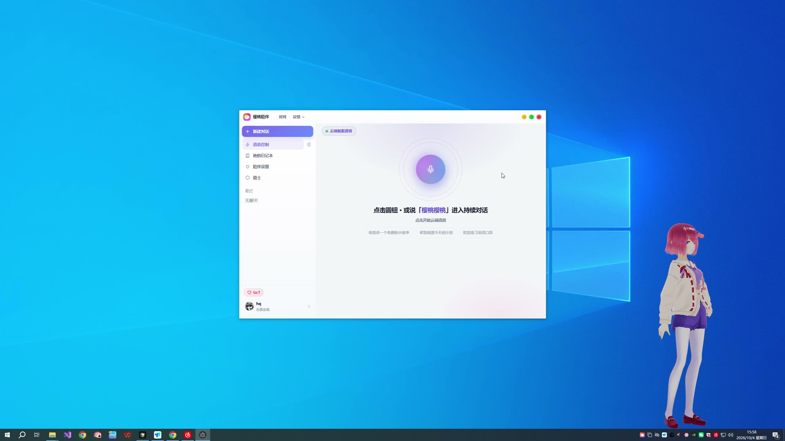
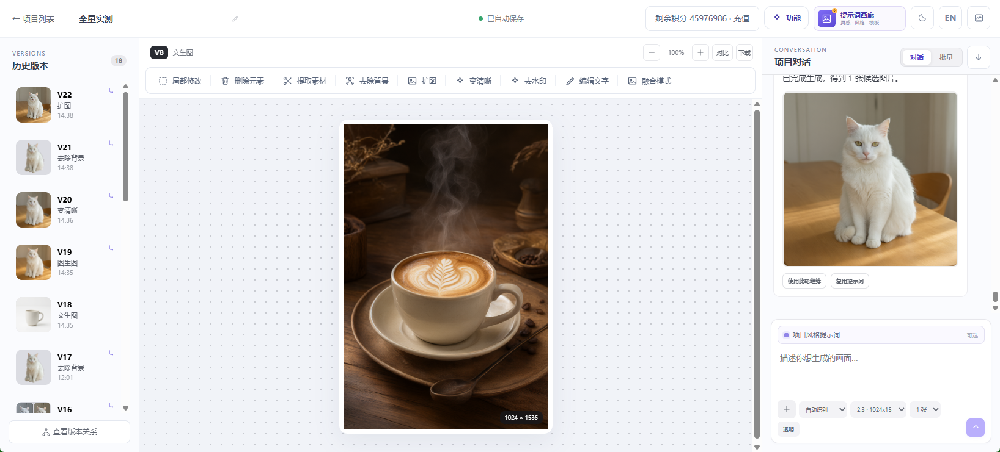

樱桃 AI
Windows 上的办公助手：把一件事办完，而不是陪着聊。
我负责 Agent 引擎，以及局域网房间和对话里的「发给电脑」。办公主界面是同事做的。
Windows AI Agent 工程师
焊枪
29 岁 · 7 年经验 · 江苏南京 · 在职，1 个月内到岗
樱桃 AI 已上线生产。它是 Windows 上的办公助手：我写 Agent 引擎，一轮对话里调工具、点桌面、需要时再读技能说明，成功做完才写入长期记忆。办公主界面是同事做的。
AI 时代已经把知识库平权了，但知识平权不等于认知平权。还要靠创作力、社交能力、执行力，以及推翻自己、承认无知的勇气——也就是元认知。不然会处在 AI 为自己打造的认知牢笼里。
Windows 上的办公助手：把一件事办完，而不是陪着聊。
我负责 Agent 引擎，以及局域网房间和对话里的「发给电脑」。办公主界面是同事做的。
2025.9 – 至今
2025.3 – 2025.9
2021.1 – 2025.3
2020.7 – 2020.12
2020.3 – 2020.6
2019.9 – 2020.2
桌面上的三维角色，能戳、能聊；真要办事，交给同一套办公引擎。
我独自开发，已发出可安装版本 2026.10.29。聊天在桌面上；办事交给樱桃 AI 的引擎。

进樱桃 AI 之前，先在公司商店上架一批独立小工具。
我独自做并上架：桌面壁纸、摸鱼面板、文本编译器、软件搬家、视频去场、C 盘清理、文件助手、助手日历。上线表从 2025.11.22 记到 2026.02.04。

装在自己电脑上的 AI 修图：改字、换区域、抠图、外扩，都留在同一个项目里。
不是从零写的。我做安装包、UI 替换、用户系统接入和上架。
